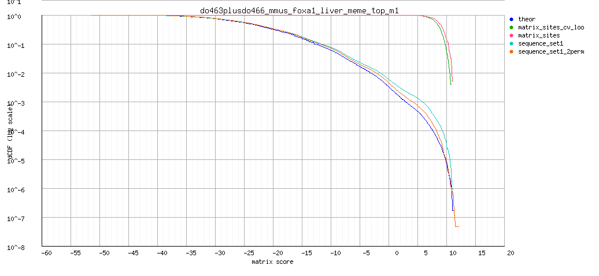

RSA-tools - matrix-quality result
Analysis: matrix-quality result: do463plusdo466_mmus_foxa1_liver_meme_top_m1 (06/09/2014 00:03)
matrix-quality result: Motif enrichment in CEBPa dog liver do463plusdo466_mmus_foxa1_liver_meme_top_m1
Command: matrix-quality -v 0 -html_title ' Motif enrichment in CEBPa dog liver ' -ms $RSAT/public_html/tmp/wwwrun/2014/09/05/matrix-quality_2014-09-05.235841_QFnNnl/input_matrix -matrix_format transfac -pseudo 1 -kfold 0 -seq sequence_set1 $RSAT/public_html/tmp/wwwrun/2014/09/05/matrix-quality_2014-09-05.235841_QFnNnl/sequence1.fasta -seq_format fasta -perm sequence_set1 2 -bgfile $RSAT/public_html/data/genomes/Canis_familiaris_EnsEMBL/oligo-frequencies/2nt_upstream-noorf_Canis_familiaris_EnsEMBL-ovlp-1str.freq.gz -bg_format oligo-analysis -bg_pseudo 0.01 -archive -o $RSAT/public_html/tmp/wwwrun/2014/09/05/matrix-quality_2014-09-05.235841_QFnNnl/matrix-quality_2014-09-05.235841
Figures
Matrix logo
Decreasing cumulative distributions (dCDF)

Decreasing cumulative distributions (dCDF), logarithmic Y axis

ROC curve (logarithmic X axis)
Matrix information
; convert-matrix -v 1 -from transfac -i $RSAT/public_html/tmp/wwwrun/2014/09/05/matrix-quality_2014-09-05.235841_QFnNnl/do463plusdo466_mmus_foxa1_liver_meme_top_m1/matrix-quality_2014-09-05.235841_do463plusdo466_mmus_foxa1_liver_meme_top_m1_matrix.tf -to tab -o $RSAT/public_html/tmp/wwwrun/2014/09/05/matrix-quality_2014-09-05.235841_QFnNnl/do463plusdo466_mmus_foxa1_liver_meme_top_m1/matrix-quality_2014-09-05.235841_do463plusdo466_mmus_foxa1_liver_meme_top_m1_matrix_info.txt -bgfile $RSAT/public_html/tmp/wwwrun/2014/09/05/matrix-quality_2014-09-05.235841_QFnNnl/matrix-quality_2014-09-05.2358412nt_upstream-noorf_Canis_familiaris_EnsEMBL-ovlp-1str.freq.gz_inclusive.tab -bg_format inclusive -return counts,frequencies,weights,info,parameters,sites,logo -logo_format png -logo_opt '-e -M -t do463plusdo466_mmus_foxa1_liver_meme_top_m1 ' -logo_file $RSAT/public_html/tmp/wwwrun/2014/09/05/matrix-quality_2014-09-05.235841_QFnNnl/do463plusdo466_mmus_foxa1_liver_meme_top_m1/matrix-quality_2014-09-05.235841_do463plusdo466_mmus_foxa1_liver_meme_top_m1_logo
; Input files
; input /home/rsat/rsat/public_html/tmp/wwwrun/2014/09/05/matrix-quality_2014-09-05.235841_QFnNnl/do463plusdo466_mmus_foxa1_liver_meme_top_m1/matrix-quality_2014-09-05.235841_do463plusdo466_mmus_foxa1_liver_meme_top_m1_matrix.tf
; prior /home/rsat/rsat/public_html/tmp/wwwrun/2014/09/05/matrix-quality_2014-09-05.235841_QFnNnl/matrix-quality_2014-09-05.2358412nt_upstream-noorf_Canis_familiaris_EnsEMBL-ovlp-1str.freq.gz_inclusive.tab
; Input format transfac
; Output files
; output /home/rsat/rsat/public_html/tmp/wwwrun/2014/09/05/matrix-quality_2014-09-05.235841_QFnNnl/do463plusdo466_mmus_foxa1_liver_meme_top_m1/matrix-quality_2014-09-05.235841_do463plusdo466_mmus_foxa1_liver_meme_top_m1_matrix_info.txt
; Output format tab
; pseudo-weight 1
; Background model
; Strand undef
; Background pseudo-frequency 0.01
; Residue probabilities
; a 0.26457
; c 0.23303
; g 0.23983
; t 0.26257
a 98 187 180 174 48 0 248 357 396 0 396
c 188 16 52 3 0 31 148 39 0 284 0
g 45 11 138 59 348 0 0 0 0 0 0
t 65 182 26 160 0 365 0 0 0 112 0
//
a 0.2 0.5 0.5 0.4 0.1 0.0 0.6 0.9 1.0 0.0 1.0
c 0.5 0.0 0.1 0.0 0.0 0.1 0.4 0.1 0.0 0.7 0.0
g 0.1 0.0 0.3 0.1 0.9 0.0 0.0 0.0 0.0 0.0 0.0
t 0.2 0.5 0.1 0.4 0.0 0.9 0.0 0.0 0.0 0.3 0.0
//
a -0.1 0.6 0.5 0.5 -0.8 -6.0 0.9 1.2 1.3 -6.0 1.3
c 0.7 -1.7 -0.6 -3.4 -6.0 -1.1 0.5 -0.9 -6.0 1.1 -6.0
g -0.7 -2.1 0.4 -0.5 1.3 -6.0 -6.0 -6.0 -6.0 -6.0 -6.0
t -0.5 0.6 -1.4 0.4 -6.0 1.3 -6.0 -6.0 -6.0 0.1 -6.0
//
a -0.0 0.3 0.2 0.2 -0.1 -0.0 0.5 1.1 1.3 -0.0 1.3
c 0.3 -0.1 -0.1 -0.0 -0.0 -0.1 0.2 -0.1 -0.0 0.8 -0.0
g -0.1 -0.1 0.1 -0.1 1.1 -0.0 -0.0 -0.0 -0.0 -0.0 -0.0
t -0.1 0.3 -0.1 0.2 -0.0 1.2 -0.0 -0.0 -0.0 0.0 -0.0
//
; Sites 396
>site_0
CAAAGTAAACA
>site_1
CAAAGTAAACA
>site_2
CAAAGTAAACA
>site_3
CAAAGTAAACA
>site_4
CAAAGTAAACA
>site_5
CAATGTAAACA
>site_6
CTAAGTAAACA
>site_7
CTAAGTAAACA
>site_8
CAGAGTAAACA
>site_9
CTATGTAAACA
>site_10
CAGTGTAAACA
>site_11
CTGAGTAAACA
>site_12
CTATGTAAACA
>site_13
CAGTGTAAACA
>site_14
CAGTGTAAACA
>site_15
CTGTGTAAACA
>site_16
CTGTGTAAACA
>site_17
CTGTGTAAACA
>site_18
CTGTGTAAACA
>site_19
CAAAGTCAACA
>site_20
CAAAGTCAACA
>site_21
CTAAGTCAACA
>site_22
CAGAGTCAACA
>site_23
CAATGTCAACA
>site_24
CAATGTCAACA
>site_25
CAATGTCAACA
>site_26
CTAAGTCAACA
>site_27
CAGAGTCAACA
>site_28
CTAAGTCAACA
>site_29
AAAAGTAAACA
>site_30
AAAAGTAAACA
>site_31
CTGAGTCAACA
>site_32
CTGAGTCAACA
>site_33
CTATGTCAACA
>site_34
AAAAGTAAACA
>site_35
CAGTGTCAACA
>site_36
CTATGTCAACA
>site_37
AAAAGTAAACA
>site_38
CTATGTCAACA
>site_39
CAGTGTCAACA
>site_40
CTGAGTCAACA
>site_41
CAGTGTCAACA
>site_42
CTGTGTCAACA
>site_43
AAGAGTAAACA
>site_44
AAGAGTAAACA
>site_45
ATAAGTAAACA
>site_46
CTGTGTCAACA
>site_47
AAGAGTAAACA
>site_48
ATAAGTAAACA
>site_49
CTGTGTCAACA
>site_50
AAGAGTAAACA
>site_51
ATAAGTAAACA
>site_52
AAGAGTAAACA
>site_53
ATAAGTAAACA
>site_54
CTGTGTCAACA
>site_55
CAAGGTAAACA
>site_56
CAAGGTAAACA
>site_57
CAAGGTAAACA
>site_58
AAGTGTAAACA
>site_59
ATGAGTAAACA
>site_60
CAAGGTAAACA
>site_61
CAAGGTAAACA
>site_62
ATGTGTAAACA
>site_63
ATGTGTAAACA
>site_64
CAGGGTAAACA
>site_65
CAGGGTAAACA
>site_66
CAAAGTAAATA
>site_67
CAGGGTAAACA
>site_68
CAAAGTAAATA
>site_69
CAAAGTAAATA
>site_70
CAGGGTAAACA
>site_71
ATGTGTAAACA
>site_72
CACAGTAAACA
>site_73
CAGAGTAAATA
>site_74
CTGGGTAAACA
>site_75
CAATGTAAATA
>site_76
CTGGGTAAACA
>site_77
CTAAGTAAATA
>site_78
CAATGTAAATA
>site_79
CTCAGTAAACA
>site_80
CTGGGTAAACA
>site_81
AAAAGTCAACA
>site_82
CTCAGTAAACA
>site_83
AAAAGTCAACA
>site_84
AAAAGTCAACA
>site_85
CTCAGTAAACA
>site_86
CAGAGTAAATA
>site_87
CAGAGTAAATA
>site_88
AAAAGTCAACA
>site_89
CAGAGTAAATA
>site_90
CAGAGTAAATA
>site_91
AAGAGTCAACA
>site_92
CTCTGTAAACA
>site_93
AAATGTCAACA
>site_94
CAGTGTAAATA
>site_95
TTATGTAAACA
>site_96
AAGAGTCAACA
>site_97
ATAAGTCAACA
>site_98
CTCTGTAAACA
>site_99
AAATGTCAACA
>site_100
CTATGTAAATA
>site_101
CTGAGTAAATA
>site_102
ATAAGTCAACA
>site_103
CTATGTAAATA
>site_104
CTGAGTAAATA
>site_105
CTCTGTAAACA
>site_106
CTATGTAAATA
>site_107
TAGTGTAAACA
>site_108
AAATGTCAACA
>site_109
CAGTGTAAATA
>site_110
AAATGTCAACA
>site_111
CTCTGTAAACA
>site_112
CTGTGTAAATA
>site_113
GAAAGTAAACA
>site_114
GAAAGTAAACA
>site_115
GAAAGTAAACA
>site_116
ATGAGTCAACA
>site_117
CTGTGTAAATA
>site_118
ATATGTCAACA
>site_119
CAAAGTCAATA
>site_120
ATGTGTCAACA
>site_121
CAAAGTCAATA
>site_122
TAAAGTCAACA
>site_123
GAGAGTAAACA
>site_124
CTAGGTCAACA
>site_125
TAAAGTCAACA
>site_126
TAAAGTCAACA
>site_127
CAGGGTCAACA
>site_128
GAGAGTAAACA
>site_129
AAAGGTAAACA
>site_130
GAGTGTAAACA
>site_131
CAATGTCAATA
>site_132
CTAAGTCAATA
>site_133
TAATGTCAACA
>site_134
CTGGGTCAACA
>site_135
CAATGTCAATA
>site_136
AAAGGTAAACA
>site_137
TTAAGTCAACA
>site_138
AAAGGTAAACA
>site_139
GAGTGTAAACA
>site_140
GTGAGTAAACA
>site_141
CAGAGTCAATA
>site_142
TAATGTCAACA
>site_143
AAAGGTAAACA
>site_144
ATAGGTAAACA
>site_145
TTATGTCAACA
>site_146
GTGTGTAAACA
>site_147
CTGAGTCAATA
>site_148
GTGTGTAAACA
>site_149
TTATGTCAACA
>site_150
CTATGTCAATA
>site_151
AAAAGTAAATA
>site_152
TTATGTCAACA
>site_153
CAGTGTCAATA
>site_154
CAGTGTCAATA
>site_155
CTCTGTCAACA
>site_156
TTATGTCAACA
>site_157
CTCTGTCAACA
>site_158
CTCTGTCAACA
>site_159
GTGTGTAAACA
>site_160
CTATGTCAATA
>site_161
ATAGGTAAACA
>site_162
GAAAGTCAACA
>site_163
ATGGGTAAACA
>site_164
TTGTGTCAACA
>site_165
TTGTGTCAACA
>site_166
TTGTGTCAACA
>site_167
ATGGGTAAACA
>site_168
ATAAGTAAATA
>site_169
AAATGTAAATA
>site_170
ATCAGTAAACA
>site_171
CTGTGTCAATA
>site_172
ATCTGTAAACA
>site_173
CATTGTAAACA
>site_174
GTAAGTCAACA
>site_175
ATGAGTAAATA
>site_176
CTTTGTAAACA
>site_177
CTTTGTAAACA
>site_178
CTAGGTAAATA
>site_179
CAAAGTACACA
>site_180
CTTTGTAAACA
>site_181
CAAAATAAACA
>site_182
CTCGGTAAACA
>site_183
TTAGGTAAACA
>site_184
GTGAGTCAACA
>site_185
CTAGGTAAATA
>site_186
CAAAATAAACA
>site_187
CAAAATAAACA
>site_188
CTTTGTAAACA
>site_189
CAAAGTACACA
>site_190
CTTTGTAAACA
>site_191
AAAGGTCAACA
>site_192
CACAGTAAATA
>site_193
AAAGGTCAACA
>site_194
CAATATAAACA
>site_195
AAAAGTCAATA
>site_196
CAATATAAACA
>site_197
AAAAGTCAATA
>site_198
TTAAGTAAATA
>site_199
CAGAATAAACA
>site_200
CAGAATAAACA
>site_201
TAATGTAAATA
>site_202
AACTGTCAACA
>site_203
AACTGTCAACA
>site_204
CAGTATAAACA
>site_205
CTCTGTAAATA
>site_206
CAGTGTACACA
>site_207
TTCTGTAAACA
>site_208
AAGAGTCAATA
>site_209
AAATGTCAATA
>site_210
CAAAGCAAACA
>site_211
CAGTGTACACA
>site_212
CAAAGCAAACA
>site_213
TAGTGTAAATA
>site_214
ATCAGTCAACA
>site_215
CTATGTACACA
>site_216
GAAGGTAAACA
>site_217
AAATGTCAATA
>site_218
GAAGGTAAACA
>site_219
AAATGTCAATA
>site_220
TTGAGTAAATA
>site_221
AAGAGTCAATA
>site_222
CTGAATAAACA
>site_223
CTATGTACACA
>site_224
GAAAGTAAATA
>site_225
GAGGGTAAACA
>site_226
CTGTGTACACA
>site_227
GACAGTAAACA
>site_228
CCATGTAAACA
>site_229
GACAGTAAACA
>site_230
TTGTGTAAATA
>site_231
CTGTGTACACA
>site_232
CTAAGCAAACA
>site_233
CTTAGTCAACA
>site_234
CTGTATAAACA
>site_235
CAAGGTCAATA
>site_236
CTGTGTACACA
>site_237
AAGTGTCAATA
>site_238
GTAAGTAAATA
>site_239
GTAAGTAAATA
>site_240
ATGTGTCAATA
>site_241
GTCAGTAAACA
>site_242
GACTGTAAACA
>site_243
GTCAGTAAACA
>site_244
CACAGTCAATA
>site_245
CAAAATCAACA
>site_246
CAAAATCAACA
>site_247
CAAAATCAACA
>site_248
GAATGTAAATA
>site_249
GTGGGTAAACA
>site_250
GAATGTAAATA
>site_251
CACTGTCAATA
>site_252
TACTGTCAACA
>site_253
CTCAGTCAATA
>site_254
AACGGTAAACA
>site_255
CTGTGCAAACA
>site_256
CAGAGTCCACA
>site_257
TTAAGTCAATA
>site_258
CTAAATCAACA
>site_259
CTGTGCAAACA
>site_260
CTGTGCAAACA
>site_261
GTCTGTAAACA
>site_262
CACTGTCAATA
>site_263
TAATGTCAATA
>site_264
TTCAGTCAACA
>site_265
AAAGGTAAATA
>site_266
CACTGTCAATA
>site_267
TAGAGTCAATA
>site_268
CAATGTCCACA
>site_269
AAAGGTAAATA
>site_270
CTGAATCAACA
>site_271
CAGTATCAACA
>site_272
TTGAGTCAATA
>site_273
TTGAGTCAATA
>site_274
ATAGGTAAATA
>site_275
CAGTGTCCACA
>site_276
TTGAGTCAATA
>site_277
ATTTGTAAACA
>site_278
TTGAGTCAATA
>site_279
TTCTGTCAACA
>site_280
TTGAGTCAATA
>site_281
CATGGTAAACA
>site_282
CTGTGTCCACA
>site_283
TTGTGTCAATA
>site_284
CTGTGTCCACA
>site_285
ATAAATAAACA
>site_286
CTGTGTCCACA
>site_287
CAAGATAAACA
>site_288
ATATGTACACA
>site_289
ACAAGTAAACA
>site_290
CAAGATAAACA
>site_291
GAGAGTCAATA
>site_292
ATGAATAAACA
>site_293
ATGAGTACACA
>site_294
GAGAGTCAATA
>site_295
ACATGTAAACA
>site_296
CAAAGTACATA
>site_297
TTAGGTAAATA
>site_298
CAAAATAAATA
>site_299
AATTGTCAACA
>site_300
ACATGTAAACA
>site_301
CAAAATAAATA
>site_302
CAAAATAAATA
>site_303
CTTTGTAAATA
>site_304
TTTTGTAAACA
>site_305
CAAGGCAAACA
>site_306
CAGAATAAATA
>site_307
CTGGGTACACA
>site_308
ATTTGTCAACA
>site_309
GATAGTAAACA
>site_310
TAAAGCAAACA
>site_311
CACAGCAAACA
>site_312
TAAAGCAAACA
>site_313
TTATGTACACA
>site_314
AGAAGTAAACA
>site_315
CTATATAAATA
>site_316
AGAAGTAAACA
>site_317
CTATATAAATA
>site_318
CTCTGTACACA
>site_319
TTGAATAAACA
>site_320
AACTGTCAATA
>site_321
AGGAGTAAACA
>site_322
TTGTGTACACA
>site_323
CAATGCAAATA
>site_324
CTTAGTCAATA
>site_325
CTCTGCAAACA
>site_326
AAATGCCAACA
>site_327
TTAGGTCAATA
>site_328
TGAAGTAAACA
>site_329
GAGTGTACACA
>site_330
AAGTGCCAACA
>site_331
ATTAGTAAATA
>site_332
TACTGTCAATA
>site_333
TTGAATCAACA
>site_334
CAACGTAAACA
>site_335
GCGAGTAAACA
>site_336
TCAAGTCAACA
>site_337
TTTGGTAAACA
>site_338
TATAGTAAATA
>site_339
AACAGCAAACA
>site_340
GTGTGCAAACA
>site_341
ATATGTACATA
>site_342
GAGAGTCCACA
>site_343
AATTGTCAATA
>site_344
TTAGATAAACA
>site_345
GGATGTAAACA
>site_346
ACCTGTAAACA
>site_347
TTTTGTAAATA
>site_348
CTTTGTACACA
>site_349
ATGGGCAAACA
>site_350
TAAAATAAATA
>site_351
AAAGATCAACA
>site_352
CAAAATACACA
>site_353
CGATGTCAATA
>site_354
AAAAATCAATA
>site_355
TAAGGCAAACA
>site_356
TTAAATAAATA
>site_357
TAAGGCAAACA
>site_358
CTGGATAAATA
>site_359
TCAGGTAAACA
>site_360
CAAAGCACACA
>site_361
AGCAGTAAACA
>site_362
TTCTGTACACA
>site_363
TCGGGTAAACA
>site_364
CAAAACAAACA
>site_365
ATAAATCAATA
>site_366
ACAAGTCAATA
>site_367
TTTTGTCAATA
>site_368
TTAGGTCCACA
>site_369
CTGAACAAACA
>site_370
ACGTGTCAATA
>site_371
GTGGGCAAACA
>site_372
ACTAGTAAACA
>site_373
GAAGATCAACA
>site_374
CAAAACCAACA
>site_375
TCCTGTCAACA
>site_376
GTGGGTCCACA
>site_377
TTGAGCCAATA
>site_378
CGCAGTCAATA
>site_379
TAAAATACACA
>site_380
AGAAATAAACA
>site_381
CACAGCACACA
>site_382
CTCCGTCAACA
>site_383
CCCAGTACACA
>site_384
TTAAACAAACA
>site_385
TTATGCACACA
>site_386
GTGAACAAACA
>site_387
GGCAGTAAATA
>site_388
AACAACAAACA
>site_389
CTTTATACACA
>site_390
GGGAGTACACA
>site_391
ATTTGCCAATA
>site_392
ATCTATCCACA
>site_393
GCTAGTAAATA
>site_394
GCAGATAAACA
>site_395
TTGCGTACACA
;
; Matrix parameters
; Columns 11
; Rows 4
; Alphabet a|c|g|t
; Prior a:0.264573486852274|c:0.233031168150323|g:0.239829744535815|t:0.262565600461588
; program transfac
; matrix.nb 1
; accession do463+do466_mmus_foxa1_liver_meme_top_m1
; AC do463+do466_mmus_foxa1_liver_meme_top_m1
; id do463+do466_mmus_foxa1_liver_meme_top_m1
; name do463plusdo466_mmus_foxa1_liver_meme_top_m1
; description cwrwGTmAAYA
; statistical_basis 396 sequences
; sites 396
; min.prior 0.233031
; alphabet.size 4
; max.bits 2
; total.information 8.31989
; information.per.column 0.756353
; max.possible.info.per.col 1.45658
; consensus.strict caaaGTaAACA
; consensus.strict.rc TGTTTACTTTG
; consensus.IUPAC cwrwGTmAAYA
; consensus.IUPAC.rc TRTTKACWYWG
; consensus.regexp c[at][ag][at]GT[ac]AA[CT]A
; consensus.regexp.rc T[AG]TT[GT]AC[AT][CT][AT]G
; residues.content.crude.freq a:0.4784|c:0.1747|g:0.1380|t:0.2089
; G+C.content.crude.freq 0.312672
; residues.content.corrected.freq a:0.4779|c:0.1748|g:0.1382|t:0.2090
; G+C.content.corrected.freq 0.313076
; min(P(S|M)) 4.68151e-29
; max(P(S|M)) 0.0144414
; proba_range 0.0144414
; Wmin -49.6
; Wmax 10.8
; Wrange 60.4
; logo file:/home/rsat/rsat/public_html/tmp/wwwrun/2014/09/05/matrix-quality_2014-09-05.235841_QFnNnl/do463plusdo466_mmus_foxa1_liver_meme_top_m1//matrix-quality_2014-09-05.235841_do463plusdo466_mmus_foxa1_liver_meme_top_m1_logo_m1.png
; logo file:/home/rsat/rsat/public_html/tmp/wwwrun/2014/09/05/matrix-quality_2014-09-05.235841_QFnNnl/do463plusdo466_mmus_foxa1_liver_meme_top_m1//matrix-quality_2014-09-05.235841_do463plusdo466_mmus_foxa1_liver_meme_top_m1_logo_m1_rc.png
; Host name rsat
; Job started 2014-09-05.235842
; Job done 2014-09-05.235842
; Seconds 0.3
; user 0.31
; system 0.02
; cuser 0.31
; csystem 0.01
Result files
{kind=link}
{kind=link}